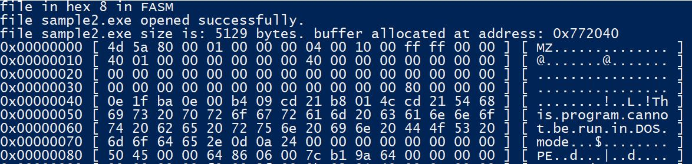

Introduction
This time my tool prints the content of any file in hex format. This comprehensive hex viewer is built entirely in FASM (Flat Assembler) and provides detailed binary analysis capabilities for any file format. The tool is designed to be simple, fast, and educational, making it an excellent resource for understanding binary file structures and low-level programming.
I used FASM to write the entire tool. FASM was chosen specifically for its challenging and low-level nature. Working directly with assembly language provides complete control over memory management, register usage, and system calls, making it an ideal choice for binary analysis tools that require precise control over the execution environment. The challenge of writing complex hex formatting logic in pure assembly also serves as an excellent learning experience for understanding computer architecture and low-level programming concepts.

Project Overview
The file_in_hex tool is a version 11 implementation that provides comprehensive hex viewing capabilities for any file format. It's written entirely in FASM assembly language, making it extremely fast and efficient for binary file analysis.
Key Features
- Universal File Support: Analyzes any file format (PE, images, documents, etc.)
- Dual Display Format: Shows both hexadecimal and ASCII representations
- Configurable Layout: 16 bytes per line with address offsets
- File Size Handling: Supports files up to 4MB with efficient memory management
- Real-time Processing: Fast binary analysis with minimal overhead
- Error Handling: Comprehensive file operation validation
Tool Specifications:
- Written in FASM assembly language (version 11)
- Supports files up to 4MB (4,194,304 bytes)
- Command-line interface with file argument
- 16-byte hex display per line with ASCII representation
- Address offset display for precise location tracking
- Comprehensive error handling and validation
Tool Architecture
The tool follows a modular architecture with separate components for different aspects of hex file analysis. The main entry point coordinates the overall file processing while specialized modules handle specific formatting tasks.
Core Components
- fih.asm (221 lines): Main entry point, file I/O operations, and program flow control
- printhex.asm (311 lines): Core hex formatting and display logic
- libs.inc (202 lines): Library function definitions and constants
- macros.inc (129 lines): Assembly macros and utility functions
- README.md (28 lines): Documentation and usage instructions
; Main entry point structure from fih.asm
format PE64 console
entry main
include 'C:\fasm\INCLUDE\WIN64AX.INC'
include 'libs.inc'
include 'macros.inc'
section '.text' code readable executable
main:
pushall
; Process command line arguments
; Open and read file
; Allocate memory buffer
; Call hex printing function
; Display results
File Structure and Components
The tool consists of 5 main source files, each serving a specific purpose in the hex viewing process:
Source Files Breakdown
- fih.asm (221 lines): Main program logic, file handling, and memory management
- printhex.asm (311 lines): Core hex formatting algorithm and display logic
- libs.inc (202 lines): Library function declarations and system constants
- macros.inc (129 lines): Assembly macros for common operations
- README.md (28 lines): Documentation and build instructions
; File handling structure from fih.asm
invoke CreateFileA, [inputfile_name_address], GENERIC_READ, 0, NULL, \
OPEN_EXISTING, FILE_ATTRIBUTE_NORMAL, NULL
mov [inputfile_opened_handle], eax
; Get file size
invoke GetFileSize, [inputfile_opened_handle], NULL
mov [inputfile_size], eax
; Allocate memory buffer
mov eax, GMEM_FIXED
or eax, GMEM_ZEROINIT
invoke GlobalAlloc, eax, [inputfile_max_size_allowed]
; Read file into memory
invoke ReadFile, [inputfile_opened_handle], [inputfile_read_buffer_address], \
[inputfile_max_size_allowed], addr inputfile_bytes_read_by_readfile, NULL
Implementation Details
The tool implements a sophisticated hex viewing system that processes files in chunks and displays them in a structured format. The implementation uses direct memory access and efficient assembly techniques for optimal performance.
File Size Validation
The tool includes comprehensive file size checking to ensure efficient memory usage and prevent system resource exhaustion.
; File size validation from fih.asm
xor rbx, rbx
mov ebx, [inputfile_max_size_allowed]
cmp [inputfile_size], ebx
jle .filesizeok
invoke printf, "file size is bigger than MAX bytes (%d bytes).", \
[inputfile_max_size_allowed]
jmp exitall
.filesizeok:
; Continue with file processing
Memory Management
The tool uses efficient memory allocation strategies to handle large files while maintaining performance:
; Memory allocation and management
mov eax, GMEM_FIXED
or eax, GMEM_ZEROINIT
invoke GlobalAlloc, eax, [inputfile_max_size_allowed]
cmp eax, 0x0
jne .globalallocok
invoke GetLastError
mov [ret_error_code], eax
invoke printf, "error in allocating memory. error code: %d", [ret_error_code]
jmp exitall
.globalallocok:
mov [inputfile_read_buffer_address], eax
invoke printf, "buffer allocated at address: 0x%x", [inputfile_read_buffer_address]
Line Calculation Algorithm
The tool calculates the number of display lines and handles partial lines efficiently:
; Line calculation logic
mov eax, [inputfile_bytes_read_by_readfile]
mov ecx, [hexprint_buffer_total_columns_to_display] ; 16 bytes per line
div ecx
mov [hexprint_buffer_total_lines_to_display], eax ; Complete lines
mov [hexprint_buffer_last_line_columns_to_display], edx ; Remaining bytes
ASCII Display Logic
The tool provides ASCII representation alongside hex values, filtering non-printable characters for better readability.
Character Filtering
Non-printable characters are replaced with dots for better visual representation:
; ASCII character filtering logic
.iteration_loop_cols_ascii_start:
cmp r15b, byte [hexprint_buffer_total_columns_to_display]
je .iteration_loop_cols_ascii_end
mov ecx, [esi]
cmp byte cl, 0x20 ; Check if >= space (32)
jge .check_ascii_readable_1
jmp .ascii_not_normal_print
.check_ascii_readable_1:
cmp byte cl, 0x7e ; Check if <= tilde (126)
jle .ascii_normal_print
jmp .ascii_not_normal_print
.ascii_normal_print:
mov [edi], byte cl ; Store printable character
jmp .check_ascii_readable_1_out
.ascii_not_normal_print:
mov [edi], byte 0x2e ; Store dot (.) for non-printable
.check_ascii_readable_1_out:
inc edi
inc esi
inc r15b
jmp .iteration_loop_cols_ascii_start
Display Format
The output format combines hex values and ASCII representation:
; Complete line display format
invoke printf, "0x%08x [ ", dword [row_address_print] ; Address
invoke printf, "%s ] ", addr hexstring ; Hex values
invoke printf, "[ %s ] ", addr filterstring ; ASCII representation
call print_newline
Source Code and Repository
My source code is located at: https://github.com/vlabsc/file_in_hex
The repository contains the complete FASM source code for the file-in-hex tool, along with comprehensive documentation and usage examples. The code is well-structured and heavily commented for educational purposes.
Build Instructions
The tool can be built using FASM with a simple command:
; Build command
fasm fih.asm fih.exe
Usage Examples
; Command line usage
fih.exe sample.exe
fih.exe image.jpg
fih.exe document.pdf
Repository Contents:
- Complete FASM source code (5 files, ~863 lines total)
- Comprehensive documentation and README
- Build script (run.bat)
- Screenshot examples of tool output
- Detailed usage instructions
The tool is designed to be educational and can serve as a reference implementation for understanding binary file analysis and FASM programming techniques.
The Power of FASM in Cybersecurity
FASM's unique characteristics make it an exceptional choice for cybersecurity tools and low-level programming projects. Its direct control over system resources and minimal abstraction layer provides capabilities that higher-level languages simply cannot match.
Why FASM is Powerful for Security Tools
- Direct Memory Access: Complete control over memory layout and manipulation - used in red-teaming for process injection and memory manipulation techniques
- Minimal Footprint: Extremely small executable sizes, perfect for embedded security tools - used in exploit development for creating compact shellcode and payloads
- No Runtime Dependencies: Self-contained executables that don't rely on external libraries - used in malware analysis for creating standalone analysis tools and unpackers
- Reverse Engineering Resistance: Difficult to analyze and reverse engineer - used in red-teaming for creating stealthy tools that evade detection and analysis
- Real-time Performance: Near-native execution speed with predictable timing - used in exploit development for timing-sensitive attacks and precision payload delivery
Notable FASM Projects in Cybersecurity
The cybersecurity community has embraced FASM for various innovative projects:
Binary Analysis Tools: Researchers have built custom hex viewers and binary analysis tools using FASM for their ability to handle any file format and provide precise byte-level analysis.
Memory Forensics: Many security researchers use FASM to create precise memory analysis tools that require exact control over memory layout and byte manipulation.
File Format Analysis: Tools for analyzing unknown file formats and detecting malicious content through binary pattern recognition.
Custom Loaders: Security professionals have created custom file loaders and analysis tools using FASM for their efficiency and precision.
Educational Value in Security
Learning FASM provides deep insights into:
- Binary Analysis: Understanding how files are structured at the byte level
- Memory Management: Direct experience with memory layout and addressing
- System Calls: How applications interact with the operating system
- File I/O Operations: Low-level file reading and processing
- Data Representation: Understanding hex, ASCII, and binary formats
; Example of FASM's power in binary analysis
; Direct file reading without high-level abstractions
invoke CreateFileA, filename, GENERIC_READ, 0, NULL, \
OPEN_EXISTING, FILE_ATTRIBUTE_NORMAL, NULL
; Direct memory manipulation for hex conversion
mov al, byte [edi]
and al, 0xf0
shr al, 4
xlatb
Community and Resources
The FASM community includes many security researchers and reverse engineers who contribute to:
- Binary Analysis Frameworks: Various hex viewers and analysis tools
- Educational Projects: Learning resources for assembly programming
- File Format Research: Tools for analyzing unknown file structures
- Memory Analysis Tools: Custom tools for forensic analysis
This rich ecosystem of security-focused projects demonstrates why FASM remains a valuable skill for cybersecurity professionals and why choosing it for this hex viewer project aligns with both educational goals and practical security tool development.
Conclusion
This file-in-hex tool demonstrates the power and efficiency of FASM assembly language for binary analysis tasks. By providing comprehensive hex viewing capabilities for any file format, the tool serves as an excellent educational resource and practical utility for binary analysis.
The implementation showcases several important concepts:
- Assembly Programming: Direct memory manipulation and efficient register usage
- Binary Analysis: Complete understanding of file structure and byte-level processing
- Memory Management: Efficient allocation and processing of large files
- Data Conversion: Efficient algorithms for hex and ASCII representation
Future Enhancements: The tool could be extended with search functionality, pattern recognition, file format detection, and support for larger files. The modular architecture makes it easy to add new analysis capabilities while maintaining the existing functionality.
The combination of FASM's efficiency and the tool's comprehensive feature set makes it an excellent choice for developers and security researchers who need to understand binary file internals or build upon this foundation for more advanced binary analysis tools.
← Back to Home